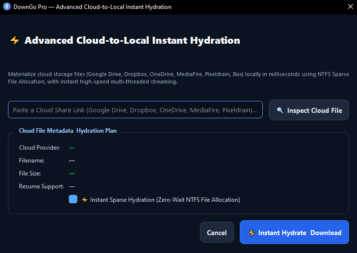
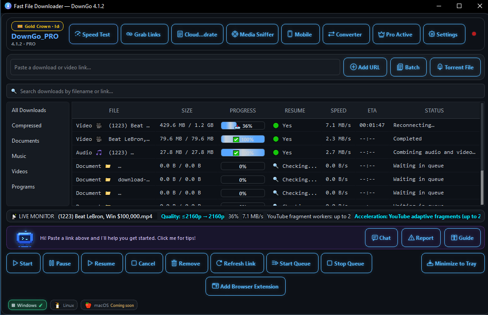
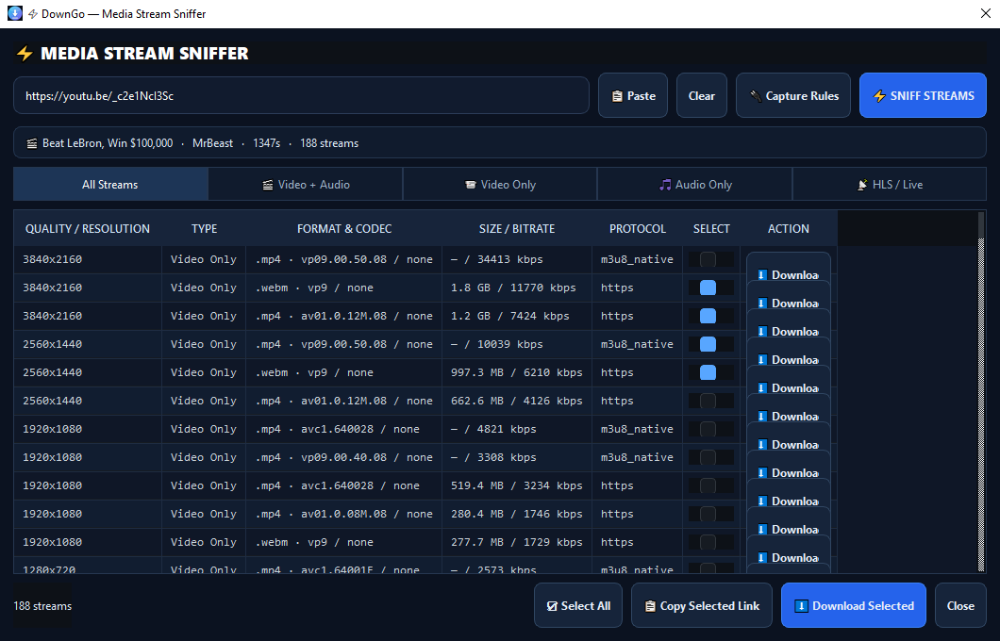
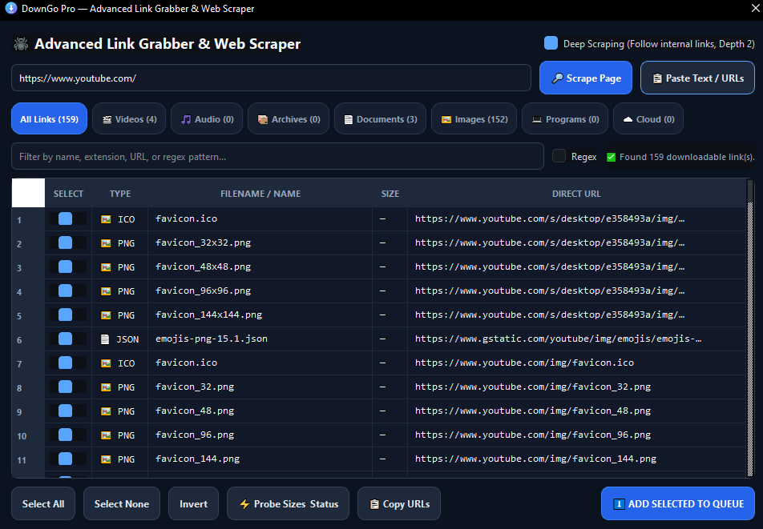
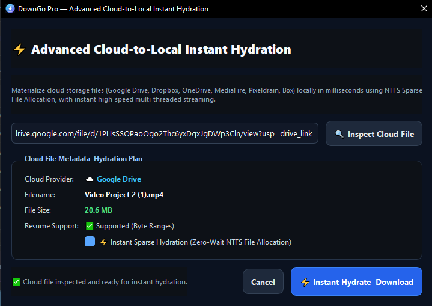
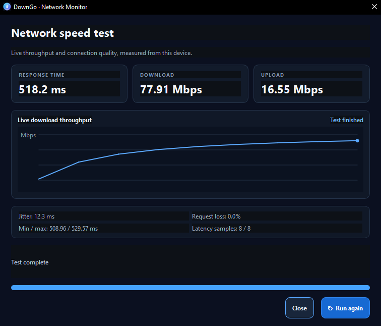
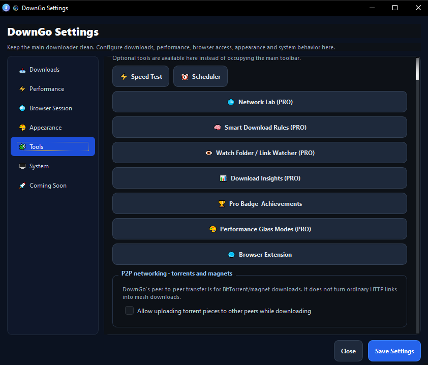
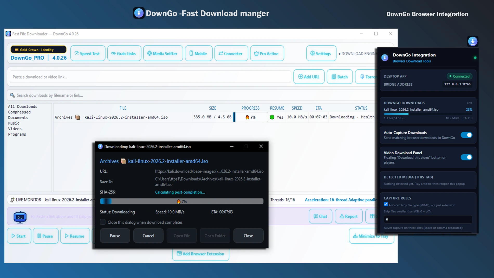

Adaptive Multi-Threaded Transfers
Splits downloads into parallel dynamic byte ranges with up to 32 connections in Pro and 4 in Free. Features intelligent tail-splitting and auto-backoff.
DownGo 4.1.2 for Windows · Linux version listed separately
Organize downloads, manage queues, and monitor transfers in one Windows app. Pause or resume compatible downloads, send links from your browser, and inspect supported media streams. Pro offers up to 32 connections when the server allows them.
Published on Microsoft Store
Free to download with optional in-app purchases. Speed and resume support depend on the server and your network.
DownGo Pro · lifetime licenses
Choose a one-time lifetime license for personal use, your household, or your business.
A complete download workspace
From multi-part acceleration to video stream inspection and BitTorrent transfers, DownGo organizes all your downloads into one powerful desktop workspace.
Splits downloads into parallel dynamic byte ranges with up to 32 connections in Pro and 4 in Free. Features intelligent tail-splitting and auto-backoff.
Captures multi-quality 4K/1080p video streams with automatic audio muxing (FFmpeg) and YouTube HD readiness on Windows 10 & 11.
Download torrents and magnet links with DHT and UPnP port forwarding directly inside DownGo without installing third-party torrent clients.
Includes built-in Network Speed Test, Media Sniffer, Web Link Grabber, Video Converter, and private QR-paired Mobile Remote Control.
Real-time progress bars directly on your Windows taskbar icon, floating Pro pill badges, customizable button icons, and dark/glass themes.
Windows Defender background scans, hardware-backed DPAPI encrypted storage, battery saver mode, and zero telemetry.
Off-peak night download scheduler, clipboard URL capture, smart category rules, and automatic ZIP archive extraction.
Manifest V3 companion for Chrome, Brave, Edge & Firefox with on-page video download overlays and seamless browser failover.
See extension setup →Explore all features & screenshot gallery →
Media support, quality options, resume, and acceleration vary by source, file format, network, and license. Only download content you are authorized to access.
DownGo Pro feature
AVAILABLE IN DOWNGO PRO
Inspect supported Google Drive, Dropbox, OneDrive, MediaFire, Pixeldrain, and Box share links, review file details, then hydrate the file to your PC. DownGo uses NTFS sparse-file allocation and multi-threaded streaming to begin the local transfer without waiting for the entire file to be allocated first.
Requires a supported cloud link and an NTFS destination. Provider access, resume support, and transfer performance depend on the share permissions, service, and network.
Explore DownGo Pro features →
Windows release · 4.1.2
Explore the updated download workspace, link tools, cloud hydration, network test, and automation screens.






Optional browser companion
Use the DownGo Browser Integration extension to send links you choose, scan page links, and optionally hand off matching browser downloads. The extension requires the desktop app on the same PC.

Built around your workflow
Add several links, search downloads, and sort files into categories.
Use the converter and optional archive extraction tools when supported formats are available.
Pro Mobile Control pairs with a phone on your private Wi-Fi network to view and manage the PC queue.
More from Rafix Technologies
Discover tools for everyday image, document, and photo tasks.

Windows app · Photo & video
Create passport, visa, and ID photos on your Windows PC. Choose a photo size and adjust the crop for your image.
View on Microsoft StoreFree online tools
Use browser-based tools for everyday tasks such as image conversion and PDF work. SnapKit says image processing happens on your device.
Explore SnapKit ToolsYour ideas inspire what we build next.Have a suggestion? Share it with the DownGo team.Send feedback
Choose your platform
Windows users can install from Microsoft Store. Linux Mint, Ubuntu, and Debian users can download the 64-bit .deb package and follow the Linux setup guide.